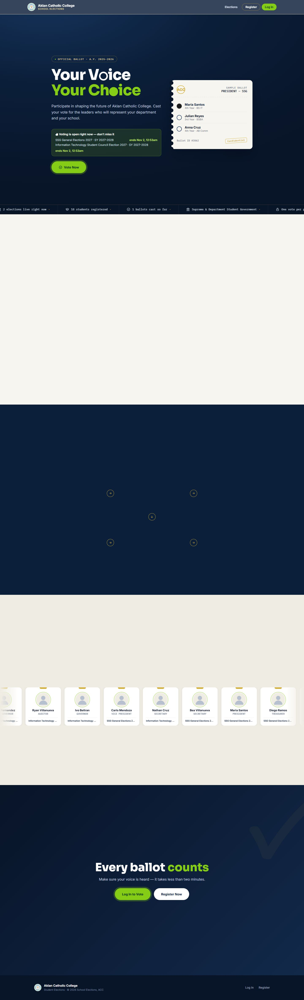
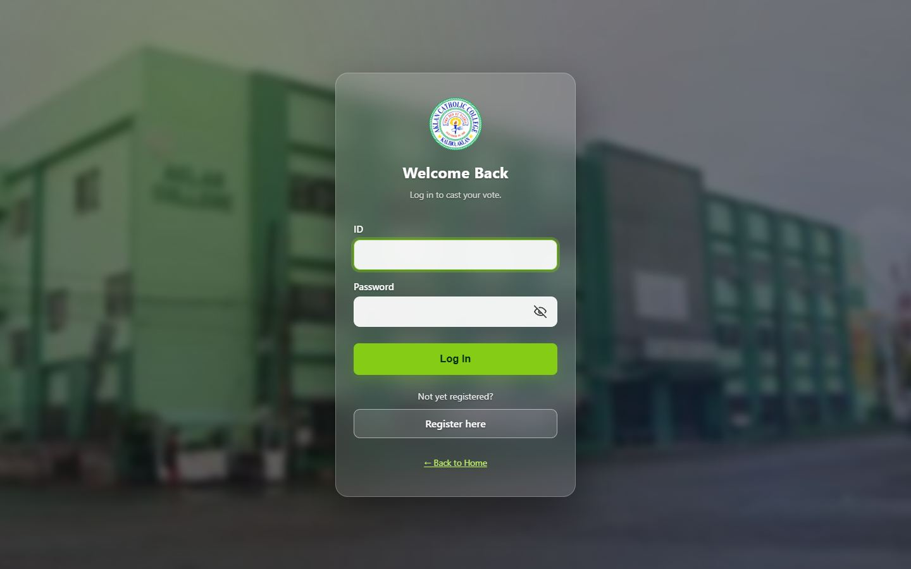
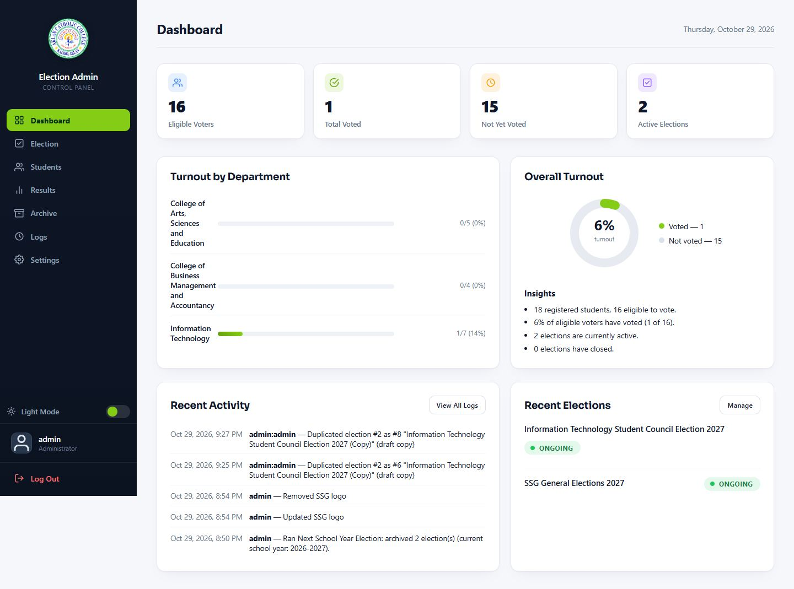
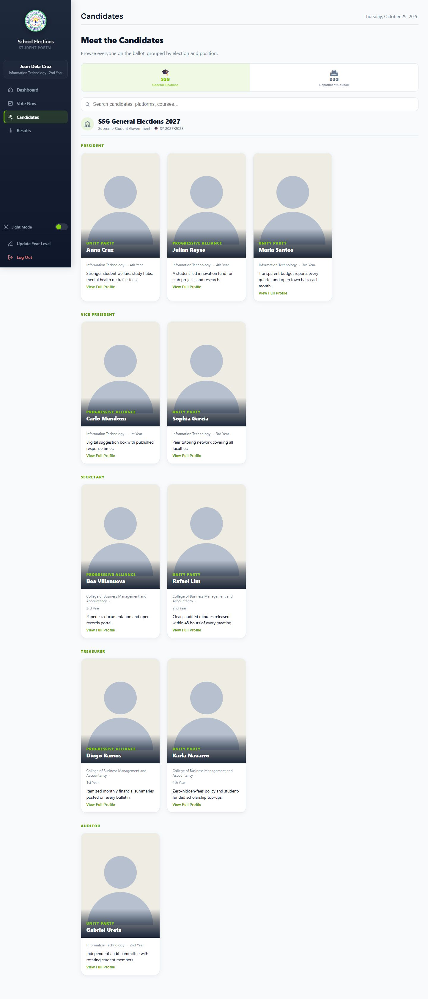
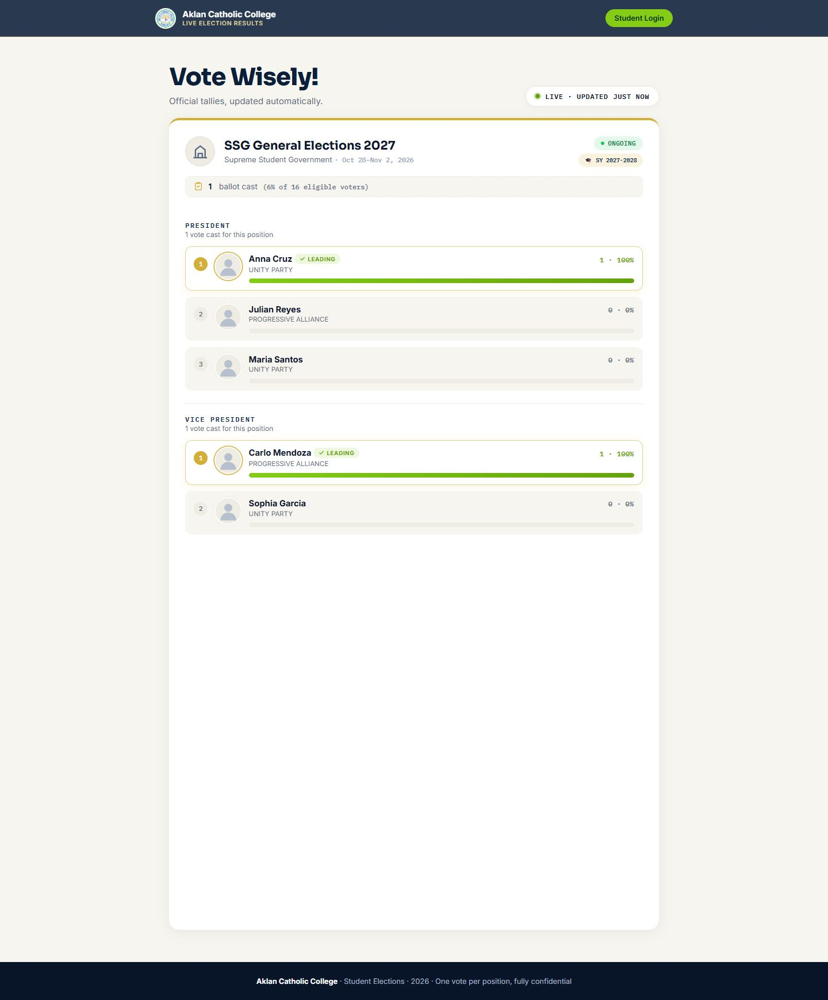
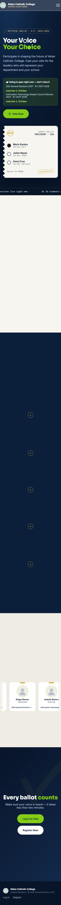

Visual match01
Material Design 3
Pill buttons, tonal chips, rounded cards and fully-rounded badges. This is the shape language the site already runs — 999px buttons and status pills throughout.
m3.material.ioThe design system behind voting-app3: a dark navy hero, lime as the one action color, gold for seals and eyebrows, a blurred glass nav, pill buttons, and a perforated ballot stub — carried through both light and dark dashboard themes.
This pack documents what voting-app3 is, not a proposed restyle. The system is a dark radial-gradient hero with a lime action color and gold seals up top, a blurred glass nav, pill CTAs and badges, rounded cards with soft shadows, and matching light (#f8fafc) and dark (#0a1120) dashboard themes.
Election night, not enterprise software: a dark board, one lime signal for "this is your action", and a ballot stub you can read at arm's length.
voting-app3 is a dark navy + lime dashboard idiom, not a flat print document — so the visual references below are dashboard and component systems, not Swiss posters. Each card is tagged honestly: visual match if it looks like the site, clarity only if we borrow its wording rules and nothing else.
Pill buttons, tonal chips, rounded cards and fully-rounded badges. This is the shape language the site already runs — 999px buttons and status pills throughout.
m3.material.ioIBM's system for data-heavy admin tools: Plex type, dense tables, dark themes. Closest match to the admin registry, results and logs panels.
carbondesignsystem.comDashboard cards, filter pills, badges and toggles in matched light and dark themes — the same structure as dashboard-app.css with its two token sets.
ui.shadcn.comThe three faces the site actually loads: Sora for page headlines, Inter for forms and UI, Plex Mono for IDs, dates and labels.
fonts.google.comBorrowed for ballot instructions and plain language only. Deliberately not a visual reference: AIGA's system is flat print, this site is dark, rounded and glowing.
aiga.org/design-for-democracyCandidate-list hierarchy and first-time-voter instructions — how a ballot section reads, not how it looks. The look comes from the four references above.
civicdesign.org/field-guidesLive captures of the site as it stands — not comps. Full-size images are in docs/design/screens/, including every admin and student panel.






Full gallery: landing · login · register · admin dashboard · admin elections · students · settings · student home · candidates · vote · public results · 404 · mobile
Lime is action; gold is ceremony; navy is authority. Sora carries authority, Inter carries the form, Mono carries the record.
Brand / light theme / dark theme
Last swatch: dark-theme text only — on cream it measures 2.7:1, so light surfaces darken it to #5D6C82.
Display / body / data
Both columns are checked against landingpage.php and assets/dashboard-app.css — including the things that are easy to misremember: the glass blur, the gradients, and the emoji are all deliberately part of this design, not leftovers.
These are the reusable pieces. The production source is assets/dashboard-app.css and landingpage.php inline styles.
Buttons & pills
Ink band & ballot strip
Navy hero with the live ballot stub, a scrolling count ticker, open elections, how-it-works, candidate roster, closing CTA.
One translucent glass card over a blurred campus photo. White fields, lime focus ring, rounded buttons.
Control room: KPI strip, turnout donut, election cards, registry tables, status pills.
Ballot folder: one continuous scroll, one decision per block, sticky progress.
One card per election, position-by-position tallies, lime share bars, LIVE/ONGOING pills.